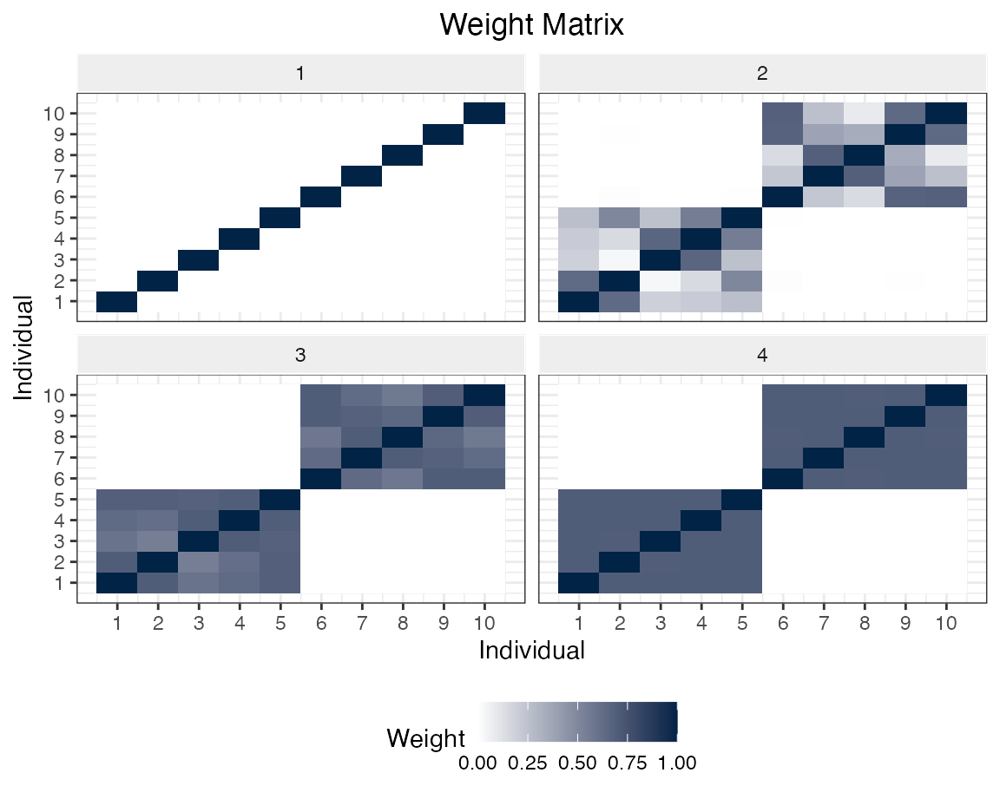

To install development version from GitHub, run the following commands:
# install.packages("devtools")
remotes::install_github("SvenKlaassen/AdaptiveDiscreteSmoothing")We generate data from a very simple model.
For each individual \(j = 1,\dots, N\), we generate \(i = 1,\dots n\) observations of covariates \(X_{i,j} \in \mathbb{R}^p\), where the covariates are generated independently from a uniform distribution \(U\sim[0,1]\). The outcome is constructed by the following linear model \[Y_{ij} = X_{i,j}^T\beta_j +\varepsilon_{i,j},\] where \(\varepsilon_{i,j} \sim \mathcal{N}(0,1)\) and \[\beta_j =
\begin{pmatrix}1\\\vdots \\1 \end{pmatrix}I_{\{j\le N/2\}}.\]
set.seed(42)
n <- 100; N <- 10; p <- 3
X <- matrix(runif(N*n*p),nrow = n*N, ncol = p)
ind <- as.factor(rep(1:N,n)[sample(1:(n*N),n*N)])
Y <- X%*%rep(1,p) * (as.numeric(ind) <= N/2) + rnorm(n*N,0,1)
data <- data.frame(X,"y" = Y, "ind" = ind)The data is saved into a standard data.frame(), with a column “ind” (as a factor()) which identifies the individuals.
At first, we have to initialize the adaptive discrete smoothing model with a valid learner. Calling the ADS$fit() method estimates the corresponding parameters.
library(AdaptiveDiscreteSmoothing)
library(mlr3)
library(mlr3learners)
learner <- mlr_learners$get("regr.lm")
model <- ADS$new(data = data,
target = "y",
individ = "ind",
learner = learner,
iterations = 4)
model$fit()Finally, we can predict new values by using the ADS$predict() method.
One can easily take a look at the estimated weights via the ADS$heatmap() method
model$heatmap()